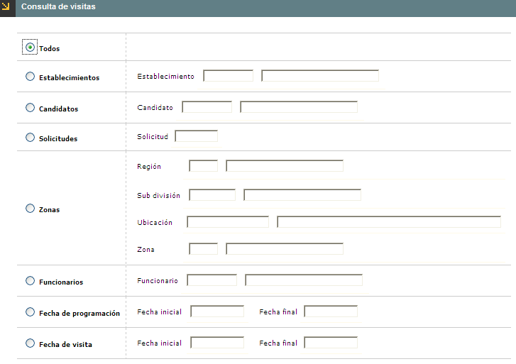
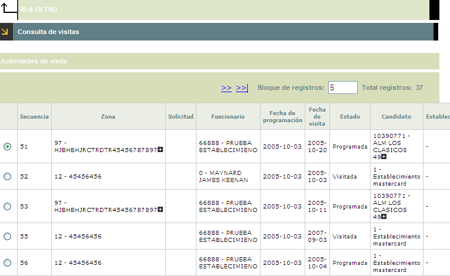
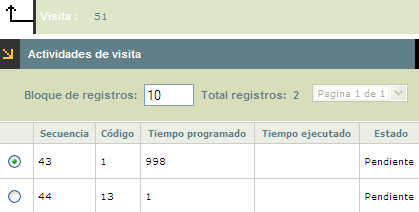

Consulta de visitas |
Mediante esta función se provee una herramienta que permite la segmentación de los comercios, por medio de la creación de grupos de información sobre los establecimientos de acuerdo con los criterios de selección que la entidad estime necesarios.
Se puede consultar de dos formas: seleccionando la opción Todos, o , segmentando por alguna de las opciones desplegadas. Al momento de seleccionar el radiobutton, se habilita como obligatorio el diligenciamiento del campo.
Filtro: Se pueden realizar consultas a través de las siguientes opciones:

Establecimientos |
Campo de 11 digitos, en el que se indica el código del establecimiento que se desea incluír o excluir de la segmentación a efectuar. |
Candidatos |
Campo de 8 digitos que ilustra aquellos establecimientos que han solicitado su vinculación al sistema y con los cuales es necesario inciciar un proceso de selección. Tambien es diligenciable por medio de lista de valores. |
Solicitudes |
Campo de 6 digitos que identifica el numero de solicitud con el cual se ha realizado el trámite de visita. |
Zonas: Se pueden realizar consultas a través de las siguientes opciones:
Región |
Campo alfanumérico de tres dígitos, que contiene el código asignado a cada Región. Se puede diligenciar de forma manual o desplazando la lista de valores. |
Sub división |
Campo alfanumérico, que contiene el código asignado a cada Sub división. Se diligencia desplazando la lista de valores. |
Ubicación |
Campo obligatorio, diligenciable según la información contenida en el campo Sub división , en esta se diligencian los datos contenidos en la tabla Información geopolitica. |
Zona |
Campo numérico de 2 dígitos, en el cual se registra el código asignado por la entidad a cada una de las zonas que conforman las subdivisiones. |
Funcionarios |
Campo de 8 digitos diligenciable manualmente o por medio de lista de valores. Alli la entidad financiera almacena los principales datos básicos de todos sus colaboradores, que estén relacionados con las actividades de visitas a establecimientos. |
Fecha de programación : Se pueden realizar consultas a través de las siguientes opciones:
Fecha inicial |
Fecha en la cual se pretende iniciar el ciclo de visitas a cada uno de los establecimientos. |
Fecha final |
Fecha en la cual se pretende finalizar el ciclo de visitas a cada uno de los establecimientos. |
Fecha de visita : Se pueden realizar consultas a través de las siguientes opciones:
Fecha inicial |
Campo en el cual se diligencia la fecha de ejecución inicial de las visitas a los comercios. |
Fecha final |
Campo en el cual se diligencia la fecha de ejecución final de las visitas a los comercios. |
El sistema muestra el siguiente formulario de acuerdo a los datos ingresados en el filtro. Este formulario cuenta con la opción Actividades de visita .

Actividades de visita : Esta opción muestra las actividades que la entidad tiene programada para el comercio al momento de realizar su visita. Asi mismo visualiza el estado de la actividad dependiendo su ejecución.
